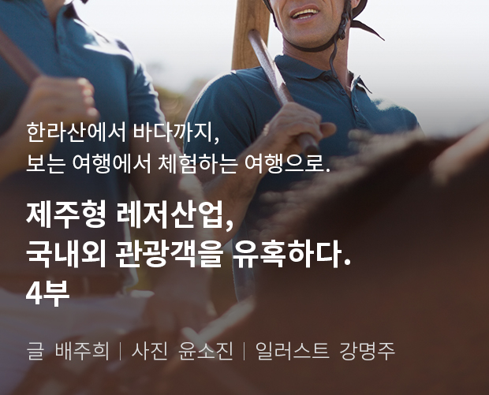
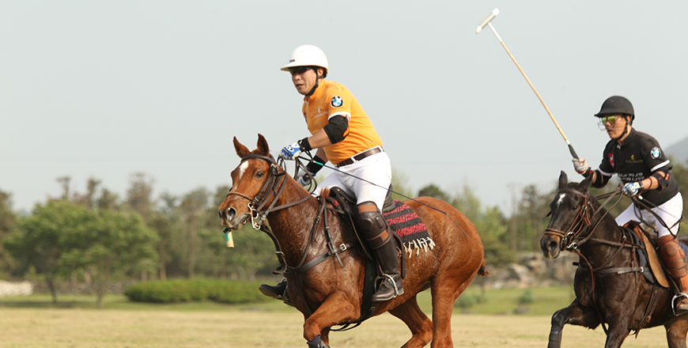
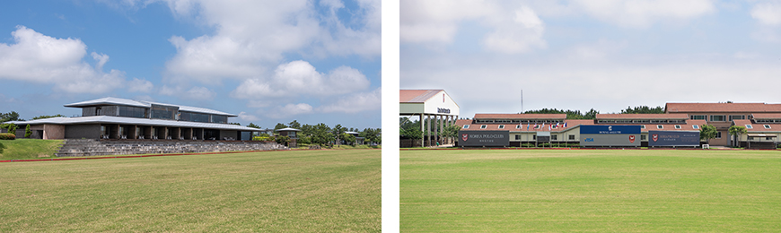
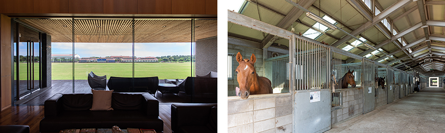
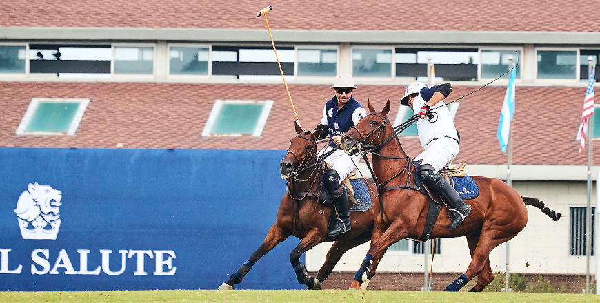

기획취재콘텐츠
- Home
- 제주라이프
- 기획취재콘텐츠
제주형 레저산업, 국내외 관광객을 유혹하다. 4부새로운 글



폴로 문화 저변 확대의 중심, 한국폴로컨트리클럽

- 폴로 경기 모습 ⓒ한국폴로컨트리클럽 -
폴로는 말을 운송수단으로 사용하기 시작한 고대에 발생하여 근대 올림픽의 정식 종목으로 채택될 만큼 오랜 역사성을 지닌 스포츠다. 말을 타고 드넓은 경기장을 누비며 말렛을 휘둘러야 하는 경기 특성상 엄청난 집중력과 강인한 체력을 기를 수 있고, 신사적인 경기 문화 덕분에 사교의 장으로서도 큰 역할을 한다. 해외 왕족이나 슈퍼리치들이 주로 즐기는 스포츠로 널리 알려져 있어 확산 속도는 빠르지 않지만 전 세계 폴로 인구는 점차 늘고 있는 추세다. 그 가운데, 국내 저변 확대의 중심에는 한국폴로컨트리클럽이 있다고 볼 수 있다.

- 방대한 규모를 자랑하는 한국폴로컨트리클럽의 클럽하우스 ⓒ윤소진 -
제주도 제주시 구좌읍 행원리 일원 21만3277m²(약 6만4500평) 규모의 한국폴로컨트리클럽은 한국 최초이자 유일의 폴로클럽이다. 2005년 설립된 한국폴로컨트리클럽은 제주도 관광사업 외국인 투자 1호 기업이기도 하다. 2008년 착공한 폴로경기장과 클럽하우스는 약 1년 반 후인 2010년 6월 준공을 마무리하고 같은 해 8월 전격 개장하여 오픈 11년 차를 맞고 있다. 축구장 8개를 합친 크기의 잔디 폴로 구장은 물론 국제 규격 이상의 실내 폴로 경기장, 전문 인력이 배치되어 60여 마리를 동시에 관리할 수 있는 2개 동의 마사 등 전 세계 어디에 내놔도 손색없는 높은 수준의 시설을 자랑한다.

- (좌)잔디 구장이 한눈에 들어오는 클럽하우스 내부 모습 ⓒ윤소진
(우)전문 인력이 관리하는 넓고 쾌적한 마사 ⓒ윤소진 -
(우)전문 인력이 관리하는 넓고 쾌적한 마사 ⓒ윤소진 -
회원들이 장기간 머물며 폴로를 즐길 수 있는 클럽하우스와 콘도미니엄은 세계적인 재일교포 건축가 이타미준의 작품이다. 제주의 돌과 나무들을 금속과 같은 현대적 건축 자재와 절묘하게 조합하여 완성한 건물은 제주의 자연미와 안락함을 듬뿍 느끼게 해준다. 특히 경기장에서 바라보는 클럽하우스의 지붕 너머 늠름한 위용의 한라산이 우뚝 서 있는 모습은 한국폴로컨트리클럽에서만 즐길 수 있는 유려한 풍경 중에서도 백미 중의 백미라고.
한국폴로컨트리클럽 설립 당시 국내 폴로 인구가 전무한 상황에서 폴로경기장 사업을 추진하는 것은 매우 리스크가 큰 관광 분야의 벤처 성격을 지닌 사업이었다. 하지만 국제화가 진전되고 사회·문화·경제 전반에서 세계적인 네트워크가 필수가 된 시대의 요구에 발맞춰 대한민국에서도 폴로의 도입이 필요한 시기라고 판단하여 장기간의 안목을 가지고 사업을 추진하였다고. 특히 폴로 경기는 회원들 간의 관계가 매우 친밀하고, 폴로를 즐기는 사람들이 각국에서 경제적, 정치적인 영향력이 큰 경우가 많아 대한민국을 알리고 산업적으로도 투자를 유인할 수 있는 요인이 크다고 볼 수 있다.
제주라는 지리적 이점, 폴로의 성장과 매력을 극대화해

- ⓒ한국폴로컨트리클럽 -
한국폴로컨트리클럽의 김현필 전무는 제주도를 클럽 조성지로 선택한 이유로 “제주도가 육지보다 겨울이 짧아 경기장 관리 및 말을 사용하는 폴로 경기에 적합하고, 제주도가 보유한 자연적 매력이 전 세계를 대상으로 마케팅과 교류를 추진하는 폴로클럽의 특성상 유인 효과가 클 것으로 생각했기 때문”이라 밝혔다. 특히 클럽 설립이 추진되던 2000년대 초반에는 동북아시아, 즉 대한민국, 일본, 중국에는 폴로클럽이 한 군데도 없었던 상황이라 중국 및 일본의 잠재적인 폴로 층을 수용하기에 적합한 지리적 이점도 고려되었다.
게다가 제주도는 국제자유도시를 표방하고 있고, 그에 맞게 외국인의 방문이 상대적으로 용이하게 제도가 정비된 것이 큰 장점으로 작용했다. 향후 제2 국제공항이 개항하면 보다 용이하게 외국 손님 유치가 가능해져 지금보다 더 활발한 마케팅 활동을 할 수 있을 것으로 보인다.
- 한국폴로컨트리클럽은 꾸준히 국제 대회를 개최해 제주의 매력을 알리고,
해외 클럽에서 열리는 국제대회에도 참가하여 교류의 장을 넓히고 있다. ⓒ한국폴로컨트리클럽 -
해외 클럽에서 열리는 국제대회에도 참가하여 교류의 장을 넓히고 있다. ⓒ한국폴로컨트리클럽 -
한국폴로컨트리클럽은 지금까지 일곱 차례의 국제 폴로 경기를 개최했고, 중국, 동남아 폴로클럽과도 수십 차례의 교류전을 지속적으로 개최해 왔다. 또한 동남아시아에서 개최하는 국제대회에도 클럽 회원들이 정기적으로 참여를 하고 있다고. 본래 올해 하반기에도 3~4개국의 폴로선수들과 클럽들이 참여하는 제8회 국제 폴로 경기를 준비하고 있었지만, 코로나 19로 인한 세계적인 팬데믹 현상에 따라 개최 여부가 불확실한 상황이라 설명했다.
그간의 대회에 참가한 외국 폴로선수 및 관계자들은 제주의 아름다움과 한국폴로컨트리클럽의 시설 수준을 높이 평가 한다. 또한 제주도가 지닌 관광자원에 매우 높은 만족도를 보이며 구체적으로 투자 등에 대하여 관심을 갖는 사람도 많이 있다고. 해외뿐만 아니라 경기 관람 기회는 일반인에게도 무료로 열려있기 때문에 한 번이라도 폴로 경기를 관전한 사람들은 자연 한가운데 자리한 폴로 경기장의 규모에 압도되고 폴로 경기 자체의 박진감과 역동성에 흠뻑 매료된다. 뻔하고 흔한 제주 유명 관광지 투어에 무료함을 느낀다면 이색적인 즐길 거리로 폴로 경기를 관람하는 것도 특별한 선택지가 될 수 있을 것으로 보인다.
적극적 홍보와 체험 기회 확대 등 폴로 문화 확산을 위한 노력 아끼지 않을 것
국내 폴로 문화가 전무했던 만큼, 한국폴로컨트리클럽은 설립 후 클럽하우스 오픈까지는 준비 기간, 그 후 10년간인 현재까지는 도입 기간으로 보고 있다. 지금까지 클럽이 운영될 수 있었던 것은 초창기부터 함께 해온 회원들의 폴로에 대한 사랑과 성원이 그 밑바탕이 된 것 같다고. 향후에는 동남아국가 및 중국, 일본 등에서 많은 회원 증가를 예상하고 있다.
또한 제주도에서도 승마 등 말 관련 산업을 적극적으로 육성해간다는 목표를 가지고 있기 때문에 좋은 정책이 발굴 시행된다면 폴로의 성장 가능성은 더욱 클 것으로 보인다. 현재 폴로에 대한 일반적인 인식이나 홍보가 부족한 실정이지만, 한국폴로컨트리클럽은 다양한 방법으로 홍보를 확대하여 나갈 계획이다. 구체적인 방향성은 ‘폴로 경기가 어떤 것인지를 체험을 통한 홍보를 확대함과 동시에 국내외 마케팅을 통한 회원 확대에 노력을 기울일 계획’이라고.
- 좌로부터 박용주 선수, 한국폴로컨트리클럽 유귤 과장, 박근성 사장. ⓒ한국폴로컨트리클럽 -
우선 폴로 문화 확산을 위해 대학별로 승마동호회 등을 중심으로 폴로를 체험하고 배울 기회를 확대하여 대학 간 폴로 리그를 조성하는 것을 구상 중이고, 제주도 내 유소년층을 중심 대상으로 폴로 체험 기회를 확대할 계획으로 방문을 원하는 학교나 단체들에게 현장 체험의 기회를 적극적으로 제공하고 있다. 국내뿐만 아니라 나아가 폴로가 주요 경기 단체로 되어 있는 동남아시아국가(태국·브루나이·필리핀·싱가포르 등) 및 중국 시장을 중심으로 해외 마케팅을 강화할 계획이라 밝혔다.
한국폴로컨트리클럽의 오랜 회원인 박용주 선수는 “폴로가 슈퍼리치만 즐길 수 있는 스포츠라는 인식이 있지만 알고 보면 말을 꼭 보유하지 않아도 즐길 수 있고, 자신이 뛸 경기의 처커4) 횟수를 선택 할 수 있는 등 생각보다 선택지가 많은 스포츠”라 말했다. 또 “신장이 일정 수준 이상이면 나이가 어려도 할 수 있고, 노후까지 오랫동안 즐길 수 있는 스포츠다. 남녀노소 즐길 수 있기 때문에 가족 스포츠로도 적합하다. 접근이 쉽지 않을 거란 편견을 잊고 많은 분이 폴로의 매력을 느껴보셨으면 좋겠다.”고 당부했다.
※ 4) 처커(chucker) : 폴로 경기를 구성하는 각 라운드를 지칭하는 용어로 농구 경기의 쿼터(quarter)와 유사한 개념이다. 게임은 보통 6번의 처커로 구성되며, 처커 사이에 3분을 쉬고 중간 휴식 시간에는 5분을 쉰다. 중요한 매치는 8번의 처커로 구성된다.
이전글
다음글